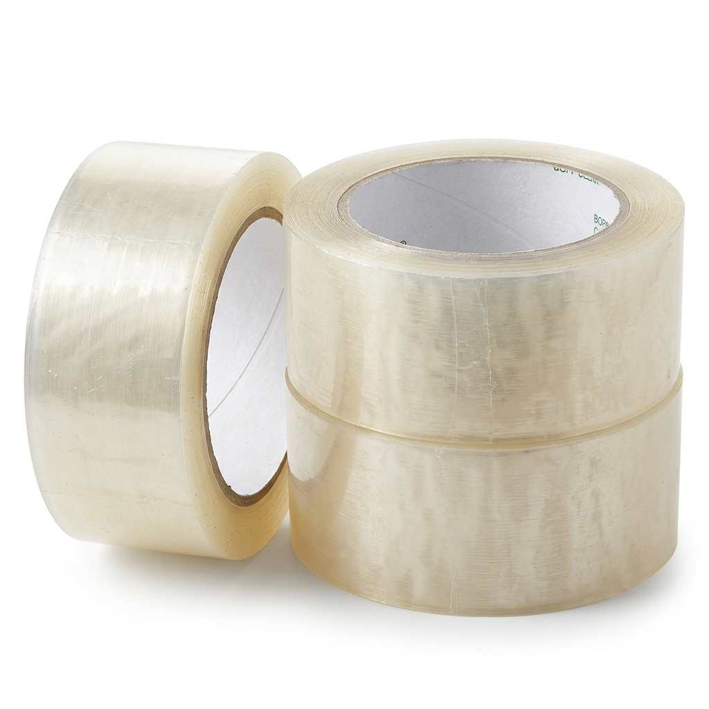
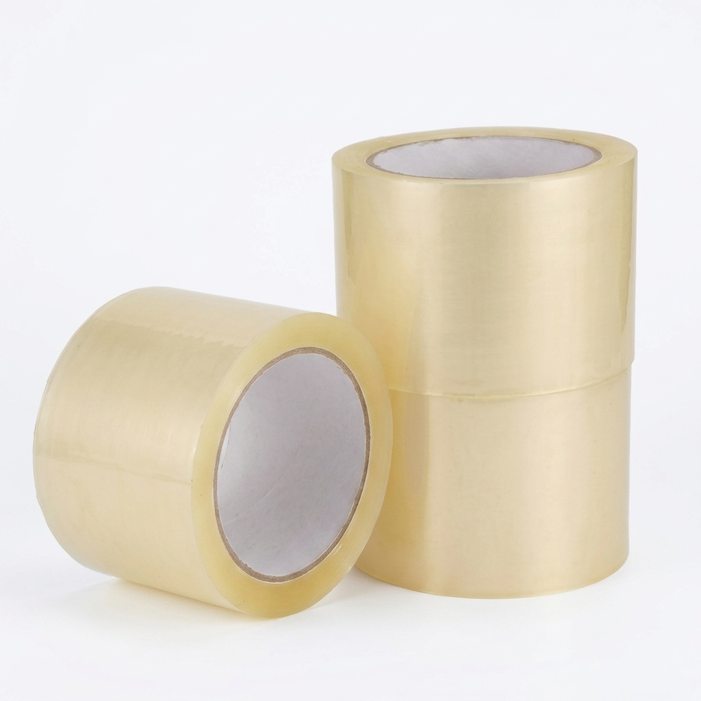

Скотч пакувальний прозорий 100 м
Код: 003
Оптимальний вибір для пакування коробок середньої ваги. Забезпечує високу клейкість та надійність.
📏 100 м х 45 мм
📦 В ящику: 72 шт
25 грн / шт

Скотч пакувальний прозорий 200 м
Код: 001
Надійний вибір для інтенсивного пакування. Стійкий до розриву. Гарантує безпеку вантажу.
📏 200 м х 45 мм
📦 В ящику: 36 шт
45 грн / шт

Скотч пакувальний прозорий 300 м
Код: 002
Максимальна намотка для інтенсивного складу. Гарантує економічність та довготривале використання.
📏 300 м х 45 мм
📦 В ящику: 36 шт
60 грн / шт

Скотч пакувальний Широкий 200 м
Код: 033
Посилена фіксація завдяки збільшеній ширині. Ідеально підходить для важких та великогабаритних вантажів.
📏 200 м х 72 мм
📦 В ящику: 24 шт
70 грн / шт